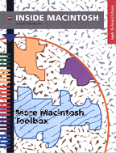

Inside Macintosh: More Macintosh Toolbox

Inside Macintosh: More Macintosh Toolbox explains important features of the Macintosh Toolbox that enhance the usability of your application. This book discusses how you canThis book also provides detailed information on how your application can create and use resources.
- support copy and paste
- provide online assistance for users through Balloon Help
- create scrolling lists in dialog boxes and windows
- draw and manipulate icons in windows
- create and use components
- translate documents from one format to another
- create control panels
- retrieve information from the desktop database
To use this book, you should be familiar with the Finder interface, menus, windows, dialog boxes, and events. These topics are discussed in Inside Macintosh: Macintosh Toolbox Essentials.
Availability: Click below to obtain Inside Macintosh: More Macintosh Toolbox in any of the following formats.

Book Contents
- Figures, Tables, and Listings
- Preface - About This Book
- Chapter 1 - Resource Manager
- Chapter 2 - Scrap Manager
- Chapter 3 - Help Manager
- Chapter 4 - List Manager
- Chapter 5 - Icon Utilities
- Chapter 6 - Component Manager
- Chapter 7 - Translation Manager
- Chapter 8 - Control Panels
- Chapter 9 - Desktop Manager
- Glossary